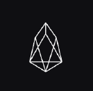

基础设施
金融
预测
娱乐
媒体
知识产权
物联网
商业
供应链
医疗
防伪
存储
COSMOS尽调170912COSMOS尽调170912
Cosmos是一种独立平行的区块链网络，解决跨链的货币交换、传递问题。未来区块链的数目会持续增长，区块链间的互联互通市场前景会很大
美国
金融
ATOM

王韦民
发起人
1500
DRC
出资
80%
任务认领
15
认领人数
2017.08.26
全部任务（680个）
上传新项目
项目类型
全部
金融
供应链
防伪
医疗
能源
通讯
商业
互联网
制造业
收起
任务类型
全部
尽职调查
动态监测
专题研究
代币机制
去中心化交易
任务状态
全部
认领中
尽调中
公式中
已完成
COMOS尽调报告170917COMOS尽调报告170917COMOS尽调报告170917COMOS尽调报告170917
李梦青
1500 DRC
领导开发的类似操作系统的区块链构架平台，实现分布应用的性能扩展领导开发的类似操作系统的区块链构架平台，实现分布应用的性能扩展 领导开发的类似操作系统的区块链构架平台，实现分布应用的性能扩展
COMOS尽调报告170917COMOS尽调报告170917COMOS尽调报告170917COMOS尽调报告170917
李梦青
1500 DRC
领导开发的类似操作系统的区块链构架平台，实现分布应用的性能扩展领导开发的类似操作系统的区块链构架平台，实现分布应用的性能扩展 领导开发的类似操作系统的区块链构架平台，实现分布应用的性能扩展
COMOS尽调报告170917COMOS尽调报告170917COMOS尽调报告170917COMOS尽调报告170917
李梦青
1500 DRC
领导开发的类似操作系统的区块链构架平台，实现分布应用的性能扩展领导开发的类似操作系统的区块链构架平台，实现分布应用的性能扩展 领导开发的类似操作系统的区块链构架平台，实现分布应用的性能扩展
COMOS尽调报告170917COMOS尽调报告170917COMOS尽调报告170917COMOS尽调报告170917
李梦青
1500 DRC
领导开发的类似操作系统的区块链构架平台，实现分布应用的性能扩展领导开发的类似操作系统的区块链构架平台，实现分布应用的性能扩展 领导开发的类似操作系统的区块链构架平台，实现分布应用的性能扩展
COMOS尽调报告170917COMOS尽调报告170917COMOS尽调报告170917COMOS尽调报告170917
李梦青
1500 DRC
领导开发的类似操作系统的区块链构架平台，实现分布应用的性能扩展领导开发的类似操作系统的区块链构架平台，实现分布应用的性能扩展 领导开发的类似操作系统的区块链构架平台，实现分布应用的性能扩展
COMOS尽调报告170917COMOS尽调报告170917COMOS尽调报告170917COMOS尽调报告170917
李梦青
1500 DRC
领导开发的类似操作系统的区块链构架平台，实现分布应用的性能扩展领导开发的类似操作系统的区块链构架平台，实现分布应用的性能扩展 领导开发的类似操作系统的区块链构架平台，实现分布应用的性能扩展
共1203条数据，
1
/100页
第一页
上一页
1
2
3
下一页
最后页